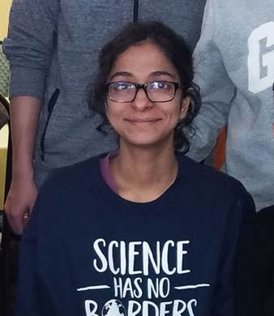

|
I am a postdoctoral researcher in the Brown lab at the University of Pennsylvania. I teach courses on genomics and introductory bioinformatics, and my research interests are in understanding gene regulation in human populations.
Education |
 |
I am a highly collaborative researcher and am primarily interested in In the past, I have worked on projects tying genetic variation to complex phenotypes. I catalogued systematic errors in the rat genome sequence assembly, developed a visualization tool for rare variant burden analyses.
Global Lipid Genetics Consortium I am a lead analyst in the Global Lipids Genetic Consortium, working on interpreting GWAS signals to identify causal genes in lipid biology, and study the genetic architecture of complex traits in human populations. My work was selected for a Reviewer’s choice award at ASHG2020. Identifying cis-regulatory variation in the Amish population I’m interested in using founder populations to characterize high-impact regulatory variation in the human genome.
Visit my Google Scholar page for complete list of publications
Guest lectures
Outreach
Miscellaneous